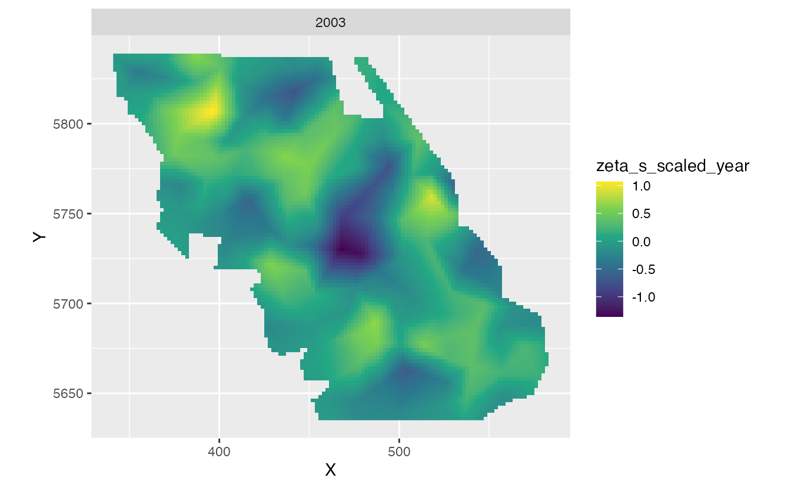
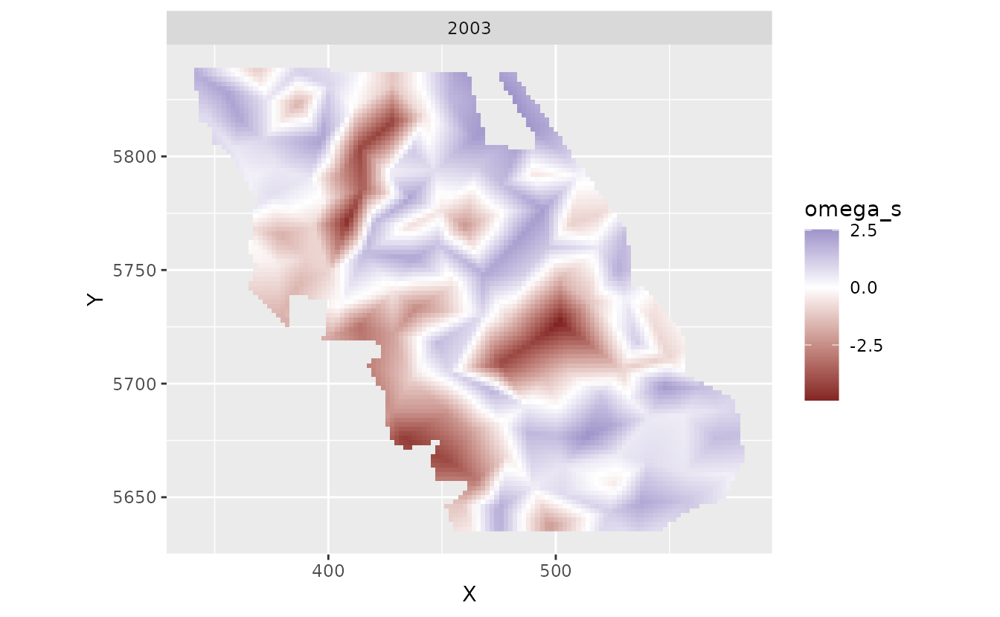
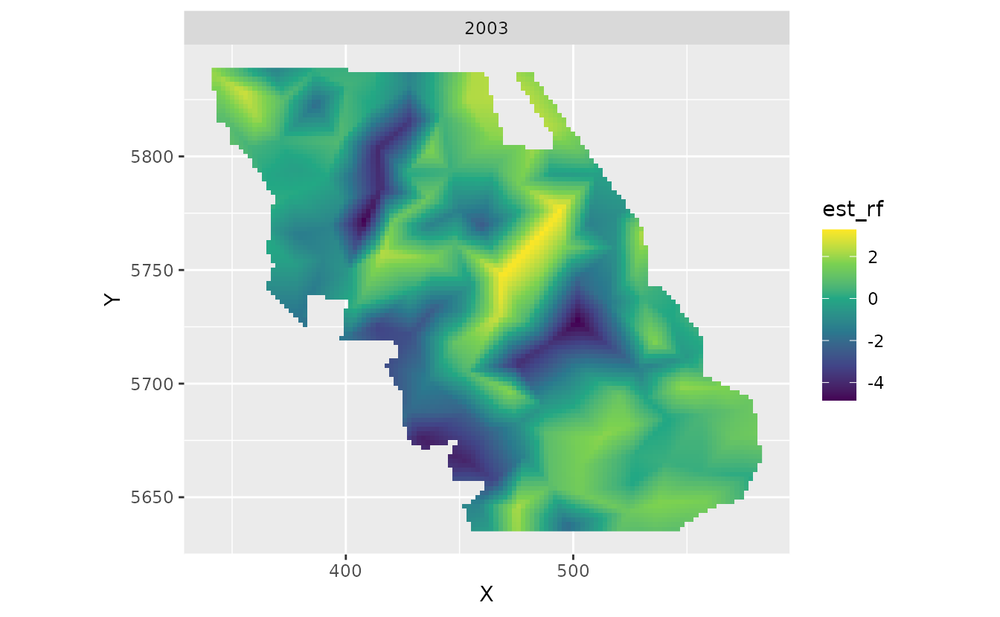

Fitting spatial trend models with sdmTMB
2022-10-18
Source:vignettes/spatial-trend-models.Rmd
spatial-trend-models.RmdIf the code in this vignette has not been evaluated, a rendered version is available on the documentation site under ‘Articles’.
Using the built-in British Columbia Queen Charlotte Sound Pacific Cod dataset, we might be interested in fitting a model that describes spatially varying trends through time. The data are as follows:
- There are columns for depth and depth squared.
- Depth was centred and scaled by its standard deviation and we’ve included those in the data frame so that they could be used to similarly scale the prediction grid.
- The density units should be kg/km2.
- Here, X and Y are coordinates in UTM zone 9.
We will set up our SPDE mesh with a relatively coarse resolution so that this vignette builds quickly:

We will fit a model that includes a slope for ‘year’, an intercept spatial random field, and another random field for spatially varying slopes the represent trends over time in space (spatial_varying argument). Our model just estimates an intercept and accounts for all other variation through the random effects.
First, we will set up a column for time that is Normal(0, 1) to help with estimation:
Now fit a model using spatial_varying ~ 0 + scaled_year:
(The 0 + drops the intercept, although sdmTMB would take care of that anyways here.)
m1 <- sdmTMB(density ~ scaled_year, data = d,
mesh = pcod_spde, family = tweedie(link = "log"),
spatial_varying = ~ 0 + scaled_year, time = "year",
spatiotemporal = "off")We have turned off spatiotemporal random fields for this example for simplicity, but they also could be IID or AR1.
Let’s extract some parameter estimates. Look for sigma_Z:
tidy(m1, conf.int = TRUE)
#> term estimate std.error conf.low conf.high
#> 1 (Intercept) 2.8458568 0.3464155 2.1668949 3.524819
#> 2 scaled_year -0.1264752 0.1173538 -0.3564844 0.103534
tidy(m1, "ran_pars", conf.int = TRUE)
#> term estimate std.error conf.low conf.high
#> 1 range 26.1922678 NA 18.1702885 37.7558614
#> 3 phi 14.0994906 NA 13.2592421 14.9929863
#> 4 sigma_O 2.1318730 NA 1.7505605 2.5962442
#> 5 sigma_Z 0.6245254 NA 0.4590955 0.8495661
#> 6 tweedie_p 1.5926880 NA 1.5726717 1.6124013Let’s look at the predictions and estimates of the spatially varying coefficients on a grid:
plot_map_raster <- function(dat, column = "est") {
ggplot(dat, aes_string("X", "Y", fill = column)) +
geom_raster() +
facet_wrap(~year) +
coord_fixed() +
scale_fill_viridis_c()
}First, we need to predict on a grid. We also need to add a column for scaled_year to match the fitting:
nd <- qcs_grid
nd$scaled_year <- (nd$year - mean(pcod$year)) / sd(pcod$year)
p1 <- predict(m1, newdata = nd)First let’s look at the spatial trends.
We will just pick out a single year to plot since they should all be the same for the slopes. Note that these are in log space. zeta_s are the spatially varying coefficients.
plot_map_raster(filter(p1, year == 2003), "zeta_s_scaled_year")
This is the spatially varying intercept:
plot_map_raster(filter(p1, year == 2003), "omega_s") + scale_fill_gradient2()
These are the predictions including all fixed and random effects plotted in log space.
plot_map_raster(filter(p1, year == 2003), "est")And we can look at just the spatiotemporal random effects for models 2 and 3 (intercept + slope combined):
plot_map_raster(filter(p1, year == 2003), "est_rf")